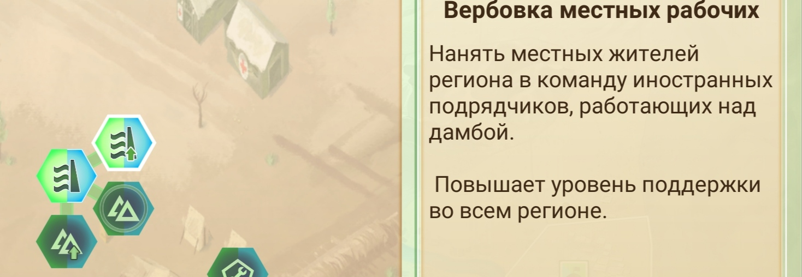

Лазурная дамба

Из за потоков реки вознесли дамбу. Но после начала войны дамба на грани уничтожения. Под угрозой стоит крупнейший город и предлежащие села. Вместе с тем и немало регионов в которых преймущество за мятежниками. Сможете ли вы востановить дамбу и остановить жестокое наступление мятежников.
Информация
Городов-3
Сельских районов-6
Удаленных районов-21
Особеность
В этом регионе есть разрушенная дамба. Ее состояние одображается с права верхней части экрана.Для улучшения дамбы нужно чтобы экинаж из строителей и материалов доехали к дамбе. Они всячески подтвергаются атаки мятежников. Что и требует защиты армии. Можна давать им бронерированные грузовики. Или вербовать местных строителей. Что облехчит процесс востановления дамбы.

